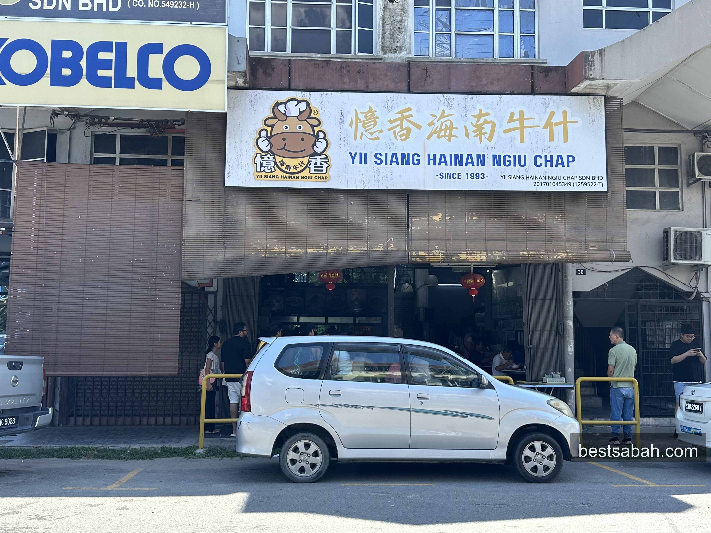
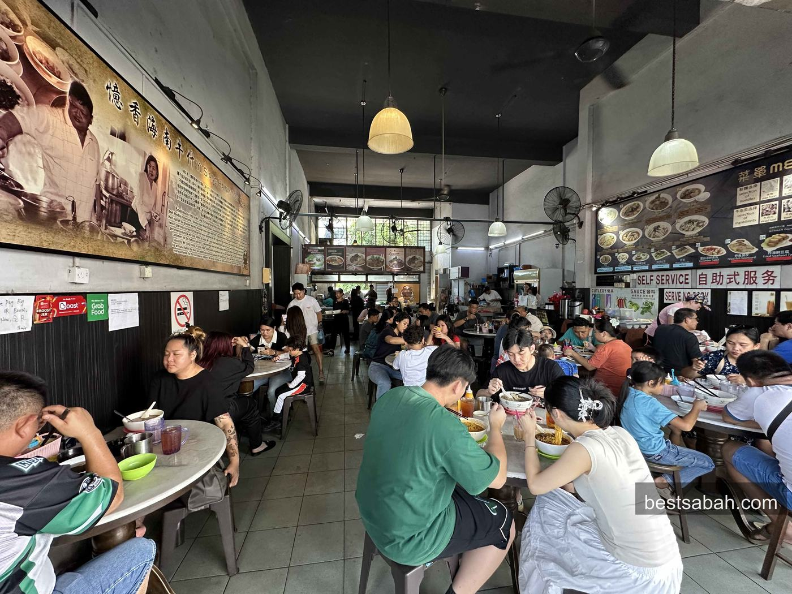
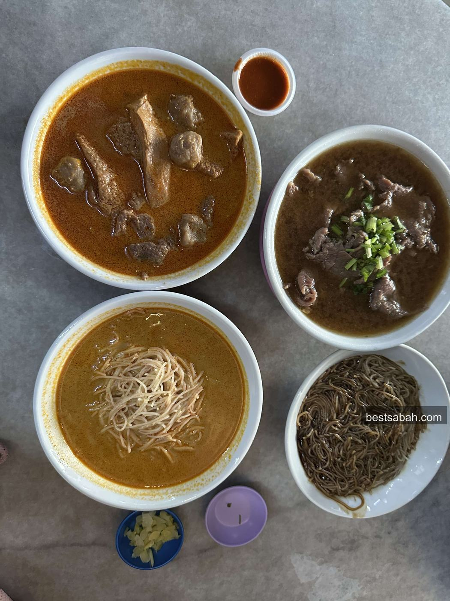
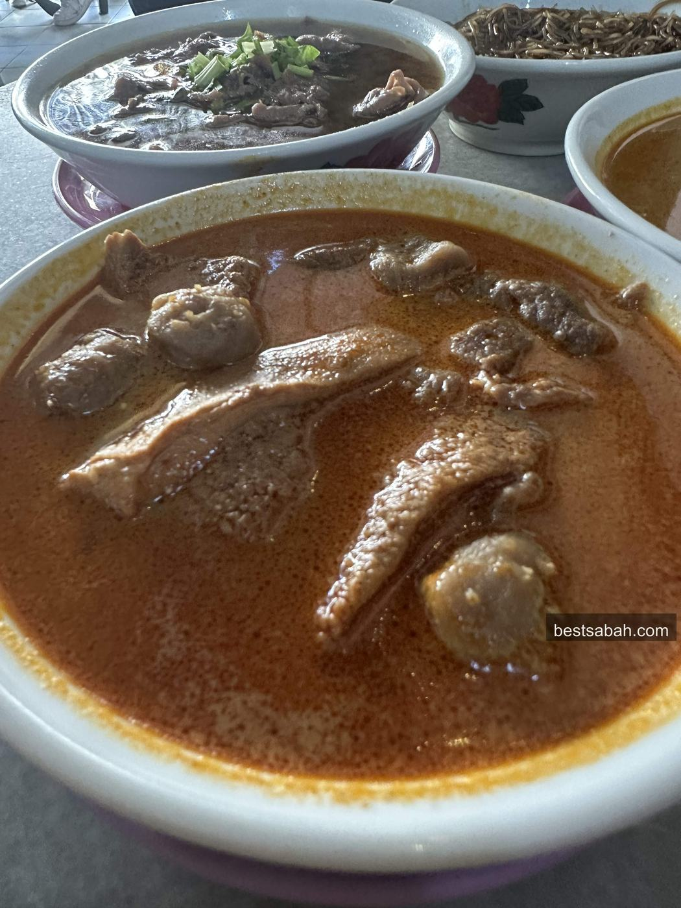
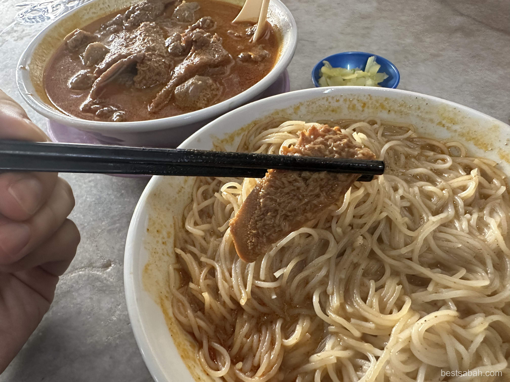
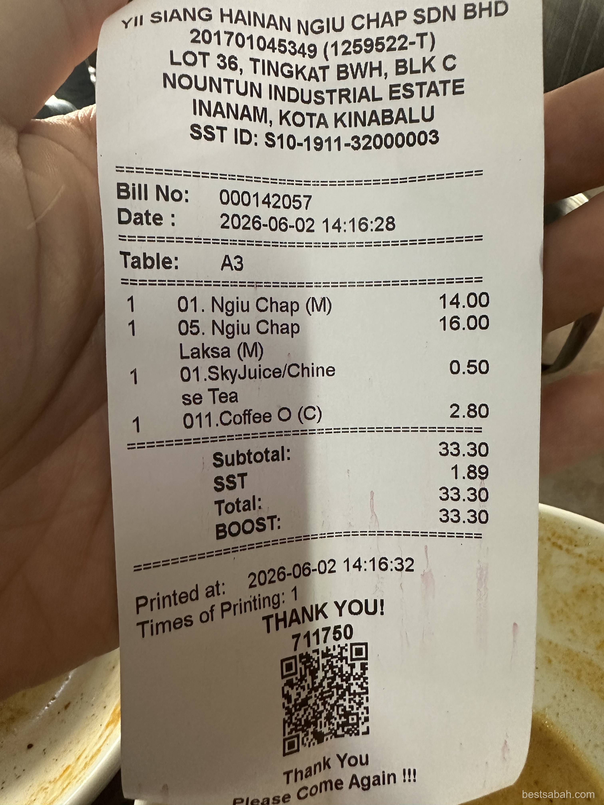
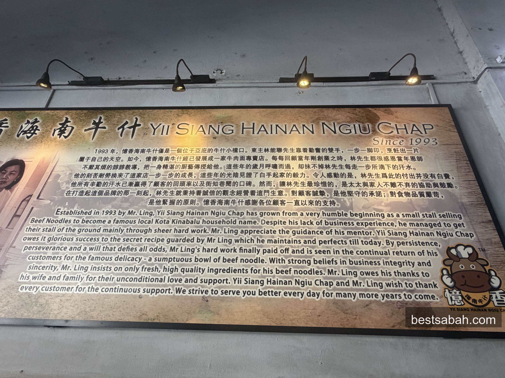

June 2026
Yii Siang Beef Noodle, Inanam: Best Beef Noodles in KK
RM14 for a huge bowl of clear beef soup, proper toppings, no fuss. Yii Siang has been doing this right for years and the standard has not dropped.

Yii Siang Hainan Ngiu Chap, Nountun Industrial Estate, Inanam. Does not look like much from outside. Locals know.
Ok honestly speaking, there is really a lot of good ngiu chap in KK. A lot. But Yii Siang takes the cake lah. Been going here for years and the standard is always the same. Not many places you can say that about.
The place is in Inanam, inside Nountun Industrial Estate. Easy to miss if you do not know where you are going. But once you know, you keep coming back.
What You Are Getting Into

Weekends by 9am, every table is taken. Arrive early.
This is Hainanese ngiu chap. "Ngiu" is cow in Hainanese, "chap" means mixed. So basically beef noodle soup with different cuts all in one bowl.
You choose your noodle. Mee hoon, mee halus, or flat rice noodles (kuey teow). Honestly all of them taste great, just go for any.
Medium size is enough for one person. More than enough, honestly.
The Ngiu Chap

RM14 each for the medium. The portions are as big as they look.
RM14 for medium. For 15 bucks you will definitely be satisfied man.
The soup is the main thing here. Clear, not cloudy. Deep beef flavour. Not salty. Just clean and rich. You can tell they put time into it.
The bowl is big and the toppings are generous. Not the kind of place that gives you a huge bowl with three thin slices on top.
The Laksa Version

The ngiu chap laksa. Same beef toppings, completely different broth.
They oso do ngiu chap laksa. RM16 for medium.
Same beef toppings, totally different broth. Richer, spicier, more lemak. If you want something with more punch, go for this one instead.
I always go for the laksa. Every single time. It is really rich and delicious man. That is what they are famous for.
The Beef and Soup

Simple-looking but a lot of hours go into that broth.
Different cuts in every bowl. Sliced beef, tripe, tendon. Everything is clean. No gamey smell, no off taste.
The tendon is what you want. Soft but not falling apart. Still has a bit of bite. Took time to get that right.
There is blended chilli on the side. Add some into the soup. Small thing but it makes a difference. The salted vegetable on the side, do not skip that either.
The Toppings

Generous toppings. You get a proper mix, not just decoration.
Toppings are not stingy here. Every bowl comes with a real mix. Sliced beef, tripe, tendon, and whatever cuts are on that day.
Want extra tendon or tripe? You can request more. Reasonable price for the add-on.
The condiments matter too. Do not dump them to the side. The salted vegetable especially, it cuts through the richness of the soup and makes the whole bowl work better.
Prices, Hours and Payment

Very reasonable for the portion size you get.
Ngiu Chap (M): RM14
Ngiu Chap Laksa (M): RM16
Hours:
Monday to Saturday: 6:30am to 3:00pm
Sunday: 6:30am to 2:00pm
Payment: QR or cash.
They can sell out before closing time. On weekends especially. Go before 10am if you want a comfortable seat and no waiting around.
Parking is easy eh. Big open lot right in front of the shop. Free.
A Bit of History

Family run, Hainanese roots. The kind of place that has been here longer than most people can remember.
The full name is Yii Siang Hainan Ngiu Chap Sdn Bhd. Formal on paper. In person it is just a no-frills shopfront that has been feeding Inanam for a long time.
Family business, Hainanese roots. The recipe has not changed. The current generation still runs it the same way, same hours, same no-fuss setup.
The regulars here are the ones who brought their kids, and now those kids are bringing their own. That says more than any review can lah.
Getting There
Address: Lot 36, Tingkat Bwh, Blk C, Nountun Industrial Estate, Inanam, Kota Kinabalu.
About 15 minutes from the city centre. Take the KKIP-Inanam road and look for the Nountun Industrial Estate sign. Parking is in the open lot right in front, free.
Coming by Grab? Search "Yii Siang Hainan Ngiu Chap" and it will come up.